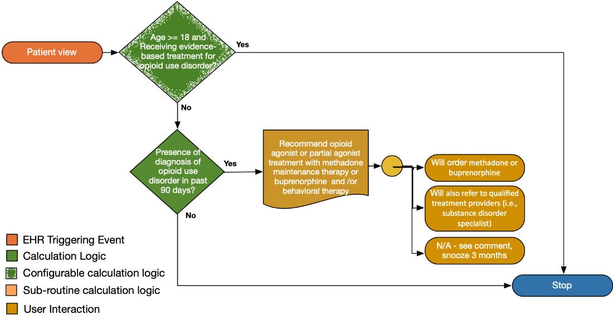

Long-term opioid use often begins with treatment of acute pain. When opioids are used for acute pain, clinicians should prescribe the lowest effective dose of immediate-release opioids and should prescribe no greater quantity than needed for the expected duration of pain severe enough to require opioids. Three days or less will often be sufficient; more than seven days will rarely be needed (recommendation category: A, evidence type: 4).
Provide links to the CDC Guidance.
| Definition | Expression | Data (Terminology) Requirement |
|---|---|---|
| Receiving evidence-based treatment for opioid use disorder? | Presence of either in last 90 days:
|
|
| Definition | Expression | Data (Terminology) Requirement |
|---|---|---|
| Presence of diagnosis of opioid use disorder | Existing active diagnosis of opioid use disorder |
|
| Positive result from opioid use disorder evaluation tool |
|
|
| Opioid metabolites in urine drug screening |
|
|
| MME ≥ 90 |
|
|
The following artifacts formalize the description of the logic and behavior defined by this recommendation.
| Resource | Type | Description |
|---|---|---|
| Opioid Terminology Management Knowledgdebase v0.1.0 Logic (OMTK) Library | Library | CQL Library that provides logic for implementation of opioid management functionality including Milligram Morphine Equivalents (MME). |
| Opioid Terminology Management Knowledgebase v0.1.0 Logic (OMTK) | CQL Source | For reference, the complete CQL source for the OMTK Logic Library. |
| Opioid Terminology Management Knowledgebase v0.1.0 Logic (OMTK) | ELM Source | For reference, the complete ELM source for the OMTK Logic Library. |
| Opioid Terminology Management Knowledgdebase v0.0.1 Logic (OMTK) Library | Library | CQL Library that provides logic for implementation of opioid management functionality including Milligram Morphine Equivalents (MME). |
| Opioid Terminology Management Knowledgebase v0.0.1 Logic (OMTK) | CQL Source | For reference, the complete CQL source for the OMTK Logic Library. |
| Opioid Terminology Management Knowledgebase v0.0.1 Logic (OMTK) | ELM Source | For reference, the complete ELM source for the OMTK Logic Library. |
| Opioid Terminology Management Knowledgdebase v0.0.1 Data (OMTK) Library | Library | CQL Library that provides logic for implementation of opioid management functionality including Milligram Morphine Equivalents (MME). |
| Opioid Terminology Management Knowledgebase v0.1.0 Model Info (OMTK) | XML Source | For reference, the complete XML source for the OMTK Model Info. |
| Opioid Terminology Management Knowledgebase v0.0.1 Data (OMTK) | CQL Source | For reference, the complete CQL source for the OMTK Logic Library. |
| Opioid Terminology Management Knowledgebase v0.0.1 Data (OMTK) | ELM Source | For reference, the complete ELM source for the OMTK Logic Library. |
| Opioid Terminology Management Knowledgdebase v0.0.2 Data (OMTK) Library | Library | CQL Library that provides logic for implementation of opioid management functionality including Milligram Morphine Equivalents (MME). |
| Opioid Terminology Management Knowledgebase v0.0.2 Data (OMTK) | CQL Source | For reference, the complete CQL source for the OMTK Logic Library. |
| Opioid Terminology Management Knowledgebase v0.0.2 Data (OMTK) | ELM Source | For reference, the complete ELM source for the OMTK Logic Library. |
| Common Opioid Decision Support Logic | Library | CQL Library that provides common logic for the recommendations |
| Common Opioid Decision Support Logic | R4 CQL Source | For reference, the complete CQL source for the common logic. |
| Common Opioid Decision Support Logic | R4 ELM Source | For reference, the complete ELM source for the common logic. |
| CDC Opioid Prescribing Guideline Recommendation #12 | PlanDefinition | Event-Condition-Action rule that implements behavior for CDC Opioid Prescribing Guideline Recommendation #12 |
| Recommendation #12 - prescribe immediate-release opioids instead of extended-release/long-acting (ER/LA) opioids | Library | Defines the data requirements to support evaluation of recommendation #12 |
| Recommendation #12 - DESCRIPTION HERE prescribe immediate-release opioids instead of extended-release/long-acting (ER/LA) opioids | R4 CQL Source | For reference, the complete CQL content for recommendation #12 |
| Recommendation #12 - DESCRIPTION HERE prescribe immediate-release opioids instead of extended-release/long-acting (ER/LA) opioids | R4 ELM Source | For reference, the complete ELM content for recommendation #12 |
The following STU3 artifacts formalize the description of the logic and behavior defined by this recommendation.
| Resource | Type | Description |
|---|---|---|
| Common Opioid Decision Support Logic | STU3 CQL Source | For reference, the complete CQL source for the common logic. |
| Common Opioid Decision Support Logic | STU3 ELM Source | For reference, the complete ELM source for the common logic. |
| Recommendation #12 - DESCRIPTION HERE prescribe immediate-release opioids instead of extended-release/long-acting (ER/LA) opioids | STU3 CQL Source | For reference, the complete CQL content for recommendation #12 |
| Recommendation #12 - DESCRIPTION HERE prescribe immediate-release opioids instead of extended-release/long-acting (ER/LA) opioids | STU3 ELM Source | For reference, the complete ELM content for recommendation #12 |
The following DSTU2 artifacts formalize the description of the logic and behavior defined by this recommendation.
| Resource | Type | Description |
|---|---|---|
| Common Opioid Decision Support Logic | DSTU2 CQL Source | For reference, the complete CQL source for the common logic. |
| Common Opioid Decision Support Logic | DSTU2 ELM Source | For reference, the complete ELM source for the common logic. |
| Recommendation #12 - DESCRIPTION HERE | DSTU2 CQL Source | For reference, the complete CQL content for recommendation #12 |
| Recommendation #12 - DESCRIPTION HERE | DSTU2 ELM Source | For reference, the complete ELM content for recommendation #12 |